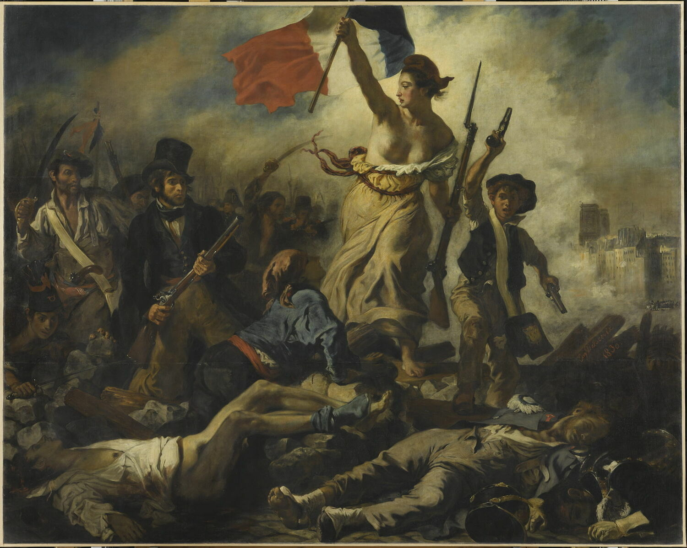
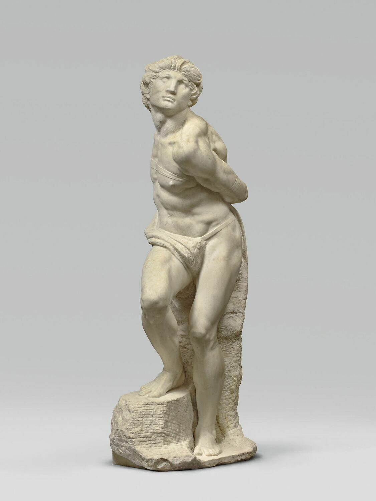
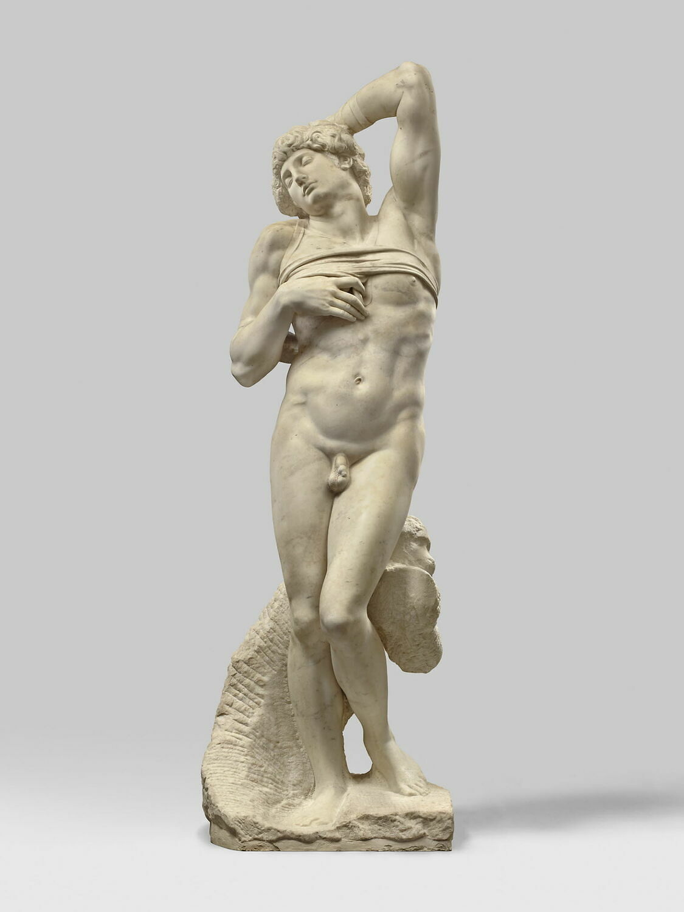
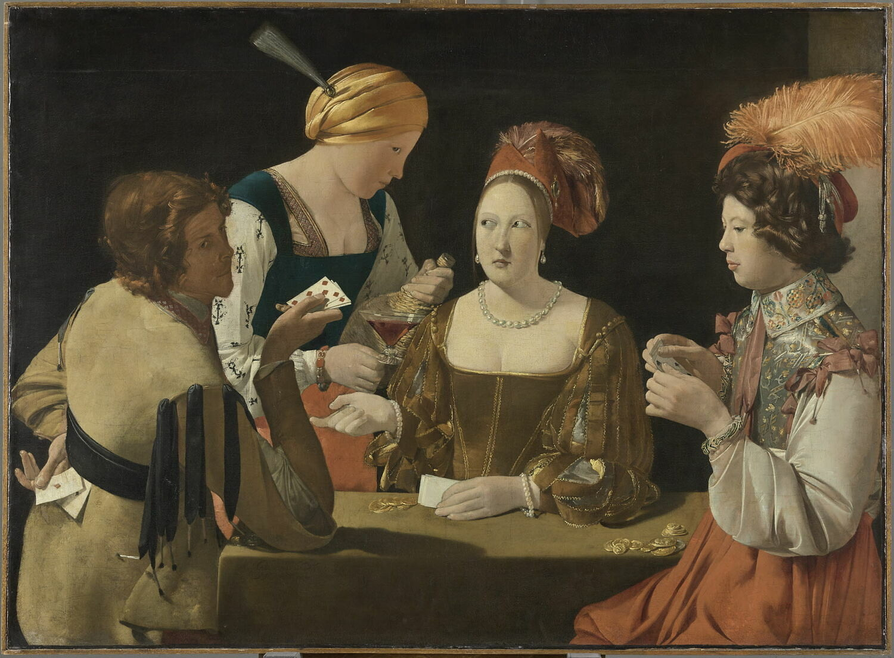

-

«Свобода, яка веде народ»
Картина, також відома як "Свобода на барикадах", прославляє Французьку Республіку з її чудовим девізом Liberté, Égalité, Fraternité ("Свобода, рівність, братерство"). Делакруа написав «Свободу» по найсвіжіших слідах липневої революції всього за три місяці, і картину тут же помістили в тронну залу Люксембурзького палацу, щоб нагадувати «королю-громадянину» Луї-Філіппу I про те, хто тут головний (втім, вона не провисіла). там довго, а «король-громадянин» дуже скоро отримав менш пафосне прізвисько "король-груша"). У центрі картини зображено Маріанну – символ Франції з 1792 року і водночас символ свободи. Маріанна в інтерпретації Делакруа начебто прямо на глядачів веде за собою представників різних класів французького суспільства (до речі, за однією з версій, в образі буржуа зображений тодішній директор Лувру). Виглядає Маріанна рішуче: чи то антична богиня, чи то проста жінка з Провансу; у її руках – прапор та рушниця. Тепер ти знатимеш, як виглядає свобода французькою.
-
 
«Раби»
Мікеланджело Буонаротті створив цілу серію бранців для гробниці папи Юлія II у соборі Святого Петра у Ватикані, однак у остаточний проект ці постаті не увійшли. Чотири незакінчені «Раби» зараз виставляються в Галереї Академії у Флоренції, а два цілком готових – у Луврі. Волею долі саме ці дві статуї ідеально виглядають у дуеті, адже одного раба прозвали «Повсталим», а другого – «Вмираючим». Перший намагається скинути пута, а другий уже змирився з сумною долею. Експерти кажуть, що взагалі-то бранці мали символізувати різні мистецтва, і вмирає у Мікеланджело живопис, а бунтує архітектура, ось такі справи.
-

«Шулер з бубновим тузом»
Дуже насичена у плані характерів картина французького живописця XVII століття, караваджиста та майстра світлотіні. Ролі в картковій грі чітко розподілені: ось багатий юнак, який звернув із доріжки благодійники, здається, до борделя; ось лощена куртизанка, готова обібрати гостя до нитки; ось служниця, що підливає та підливає вино; а ось і друг підступної панночки, з тузом напоготові, дивиться на глядача, ніби підморгуючи йому – «не видаси?». Латур блискуче передає напругу моменту.